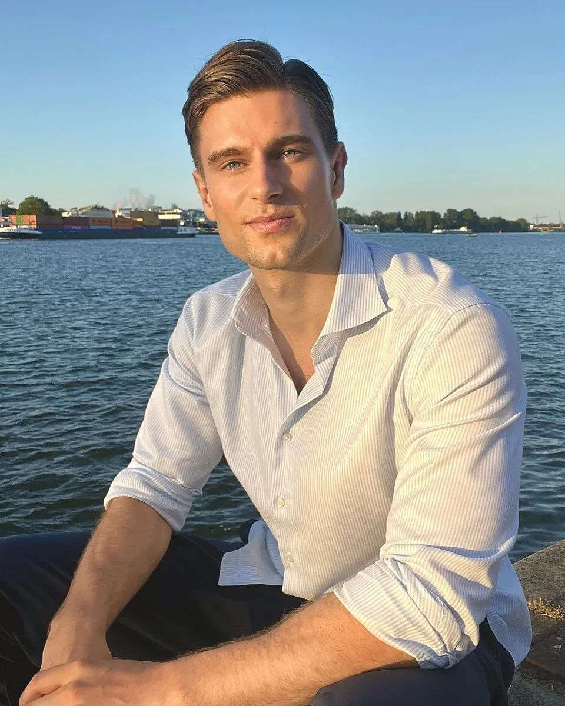
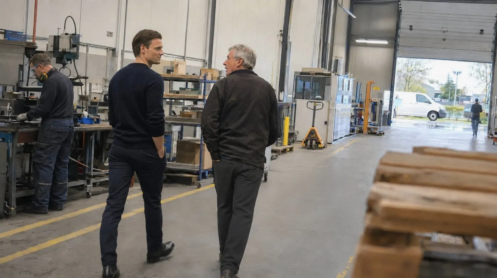

Ik zoek één bedrijf om zelf te leiden. Voor de lange termijn.
Ik ben Teun de Planque. Ik neem één gezond Nederlands bedrijf over van een ondernemer die nadenkt over opvolging. Als opvolger die blijft, ook over vijf of tien jaar.
Ik neem zelf op. Een eerste gesprek is vrijblijvend en vertrouwelijk.
Zoekprofiel winst (EBITDA) € 0,5 tot 2 miljoen · bij voorkeur zakelijke klanten · heel Nederland · eigen vermogen plus bankfinanciering · alle criteria

De mooiste bedrijven die ik heb leren kennen, waren zelden de grootste. Het waren bedrijven waar de eigenaar iedereen bij naam kende, waar klanten al twintig jaar terugkwamen en waar vakmanschap meer telde dan een mooie presentatie. Zo'n bedrijf wil ik zelf leiden.
In ruim vijf jaar bij McKinsey heb ik nauw samengewerkt met ondernemers, directeuren en hun teams om bedrijven te laten groeien en hun dagelijkse bedrijfsvoering te verbeteren.
Bij een technisch onderhoudsbedrijf leidde ik een traject om de dagelijkse operatie te verbeteren. Een meer centrale planning leek de logische oplossing, maar ervaren monteurs wezen ons op het belang van flexibiliteit en persoonlijk klantcontact. In plaats van de oorspronkelijke aanpak door te drukken, hebben we samen een werkwijze ontwikkeld die efficiënter was, zonder die sterke kanten te verliezen. Ik hielp de veranderingen daadwerkelijk door te voeren, met als resultaat een betere planning en tevredenere klanten.
Die ervaring heeft me geleerd dat goed leiderschap begint met luisteren naar de mensen die het bedrijf het beste kennen.
Als adviseur kwam ik binnen, dacht ik mee en vertrok ik weer. Nu wil ik zelf aan het roer staan.
Ik koop niet om door te verkopen. Ik koop om te blijven.
- Ruim 5 jaarMcKinsey & Company, Associate Partner
- Opleidingtechniek en bedrijfskunde, Stanford University
- Heel Nederlandik kom graag bij u langs
Een gezond bedrijf, een eigenaar die verder kijkt
Ik zoek een stabiel, winstgevend bedrijf met een sterke positie in de markt en een team dat het verschil maakt.
Twijfelt u of uw bedrijf past? Bel gerust.
- Sector
- Bij voorkeur bedrijven met zakelijke klanten, in een markt die niet sterk meebeweegt met de economie. Bijvoorbeeld technische dienstverlening, onderhoud en inspectie, IT-dienstverlening of gespecialiseerde handel
- Omvang
- EBITDA (bedrijfsresultaat vóór afschrijvingen) van circa €0,5 tot €2 miljoen; omzet indicatief €2 tot €15 miljoen
- Belang
- Bij voorkeur alle aandelen of een ruime meerderheid
- Locatie
- Gevestigd in Nederland
- Kenmerken
- Terugkerende omzet, een gespreide klantenbasis, een stabiel team en een goede reputatie
- Situatie
- Een eigenaar die nadenkt over opvolging
Wat minder past
- Bedrijven in een herstelsituatie
- Sterk conjunctuurgevoelige, projectmatige of seizoensgebonden omzet
- Grote afhankelijkheid van één klant
Eigen middelen, eigen beslissing
Ik heb ruim €1,5 miljoen aan eigen middelen beschikbaar, aangevuld met bankfinanciering en eventueel een verkoperslening. Met banken heb ik al gesproken over overnamefinanciering.
Ik investeer voor eigen rekening, zonder fonds of externe aandeelhouders, en neem zelf de beslissingen. Daardoor kan ik snel handelen.
Mijn financiële middelen kan ik op verzoek aantonen.

Zelf aan het roer
Na de overname ga ik zelf dagelijks leidinggeven aan het bedrijf. Mijn eerste stap is om de medewerkers, klanten en dagelijkse operatie goed te leren kennen en te begrijpen wat het bedrijf succesvol maakt.
Die sterke basis wil ik behouden en daarop voortbouwen. Waar kansen liggen voor verbetering, wil ik die samen met het bestaande team benutten.
Ik zoek geen bedrijf om op afstand te bezitten, maar een onderneming waar ik voor de lange termijn zelf mijn tijd, energie en kapitaal in steek.
Uw levenswerk, in goede handen
Uw mensen en uw naam
Het team, de cultuur en de naam die klanten kennen, zijn de basis waarop ik voortbouw.
We spreken de overdracht samen af
Hoe lang u betrokken blijft en wanneer we het team informeren, leggen we samen vast.
Een eerlijk bod
Onderbouwd en transparant. Nieuwe inzichten uit het onderzoek bespreek ik direct met u.
Discreet, met één aanspreekpunt
Niemand hoort iets voordat u dat wilt. U heeft van begin tot eind met mij te maken.
Vijf stappen, zonder druk
- ongeveer een uur
Kennismaking
Een vrijblijvend gesprek, bij u op locatie of telefonisch.
- binnen enkele dagen
Vertrouwelijkheid
We tekenen een geheimhoudingsverklaring voordat u cijfers deelt.
- 2 tot 3 weken na de eerste cijfers
Indicatief bod
Een concreet, onderbouwd voorstel, inclusief de financiering en eventuele voorwaarden.
- indicatief 8 tot 12 weken
Onderzoek
Samen met mijn adviseurs, met zo min mogelijk belasting voor u en uw team.
- in overleg
Overdracht
Afronding bij de notaris, daarna de overdracht zoals afgesproken.
Vragen die ondernemers vaak hebben
Wat gebeurt er met mijn medewerkers?
Zij zijn de reden dat het bedrijf goed is. Ik neem het over om het verder te brengen, niet om het op te knippen of te laten opgaan in een groot concern.
Hoe lang blijf ik betrokken, en hoe verloopt de overdracht?
Dat spreken we samen af. Sommige ondernemers stoppen na een paar maanden, anderen blijven nog een tijd betrokken.
Waarom niet gewoon verkopen aan een concurrent of een fonds?
Dat kan een goede keuze zijn. Een concurrent integreert uw bedrijf vaak in het zijne, en een fonds verkoopt het meestal na enkele jaren door. Bij mij blijft het zelfstandig, met één eigenaar die er dagelijks leiding aan geeft.
Moet ik alles in één keer verkopen?
Een volledige overdracht is mogelijk. Als het past, kunt u ook tijdelijk een klein belang houden of een deel van de koopprijs later ontvangen.
Een snelle, betrouwbare partij aan tafel
Begeleidt u een ondernemer die het bedrijf wil overdragen? Stuur mij gerust een anonieme teaser. Gevoelige informatie graag na geheimhouding; contact met uw cliënt altijd in overleg.
Mail een anonieme teaser- Reactie binnen 24 uur op uw teaser
- Binnen één week na de eerste informatie een helder ja of nee
- Ruim €1,5 miljoen eigen middelen, aantoonbaar op verzoek
- Eén beslisser, zonder fonds of externe aandeelhouders
Laten we kennismaken
Bel of mail mij gerust, ook als u nog maar net nadenkt over opvolging.